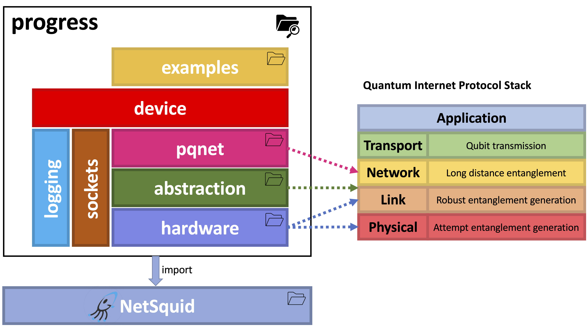
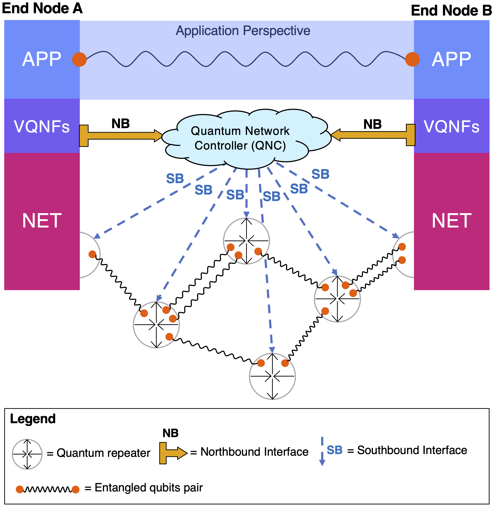

ProgReSS
Welcome to the documentation of Programmable quantum Repeaters Software Simulator (ProgReSS), a Python package for the simulation of programmable quantum networks, built on top of NetSquid.
You can download and install the ProgReSS package here.
The package is organized as follows:
{kind=link}
- where
The Quantum Internet Protocol Stack in the picture is the one proposed by Dahlberg et al..
The hardware package contains the classes that model the quantum hardware of the devices (e.g. quantum processors, optical fibers, QNICs etc.) and the Link Layer Protocols (LLPs). For this reason, it is linked to the Physical and Link layers of the reference stack.
The abstraction package contains the Quantum Hardware Abstraction Layer (QHAL) class. Its role is to provide a unified interface to the Network layer for what concerns quantum resources and quantum hardware operations. As such, it can be seen as an adaptation layer placed between the Link and Network layers of the reference stack.
The pqnet package (Programmable Quantum NETwork) is the core of ProgReSS It is our implementation of the Network layer, and it contains a framework to realize a completely programmable quantum network.
The device module is built on top of the underlying packages and it contains the QNetworkDevice class, which models a configurable, programmable quantum network device ready to be installed in the user’s custom topology.
The examples package contains some examples of how to use the ProgReSS package to simulate and test programmable quantum network topologies.
Some utility modules (logging, sockets) are used across the whole package.
Since ProgReSS simulates a programmable quantum network, we propose a network architectural model where the data plane of the Network layer (i.e. the operations carried out by quantum repeaters at this level) is programmed by a centralized Quantum Network Controller (QNC). In the picture below, we show our model:
{kind=link}
From top to bottom: Applications (APP) are provided with end-to-end entanglement without any knowledge about the underlying infrastructure. This service is obtained thanks to a set of Virtual Quantum Network Functions (VQNFs), that are requested to the centralized network controller through the northbound interface. The controller exploits the southbound interface to program all the infrastructure devices at the Network (NET) level to realize the specified VQNFs.